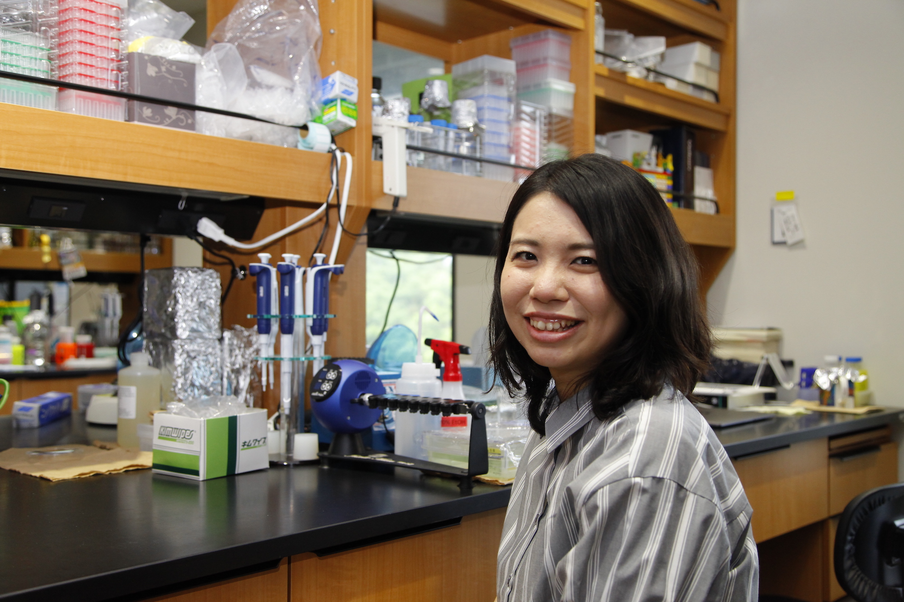

Department of Molecular Behavioral Physiology
Institute of Medicine / WPI-IIIS
University of Tsukuba
We aim to understand why and how we sleep at night and wake up in the morning. In almost organisms living on the earth, many biological processes including sleep exhibit rhythms with a period of ~24 hours, which is called as circadian rhythms. Well-coordinated rhythms by internal time-keeping system, circadian clock, is essential for physical and mental health. We previously identified several gene variants in clock genes altering sleep/wake pattern in humans by forward genetics approach. It is thus well established that the circadian clock has a great impact on sleep/wake rhythms, while the neural pathway from the master clock in the brain (suprachiasmatic nucleus, SCN) to sleep/wake-regulating regions is still elusive. To understand the neural network controlling the circadian sleep behavior, we utilize gene-modified animals, macro injection and opto/chemo-genetics technics to evaluate the effect of manipulation of neurons in the SCN or clock-target regions on sleep/wake rhythms. In addition to the output pathway from the clock, we are also interested in oscillatory mechanism of the clock within the SCN neurons (intracellular oscillator) as well as mechanism of entrainment of the clock to environmental cycle such as light-dark cycle (input pathway), which are considered as three main factors of the circadian clock. We believe that understanding of the whole picture of the circadian clock is key to advance sleep study.
Neural and molecular control of energy supression and torpor-like states.
Clock-to-brain pathways coordinating sleep and physiology.
Deciphering the mechanism of circadian clock.
Non-visual light sensing and environmental synchronization.
New approaches to control neuronal activity.

Principal Investigator
Assistant Professor
Researcher
Researcher
Yu J., Deki-Arima N., Saito Y.C., et al., Hirano A.*, Sakurai T.
Frontiers in Sleep, 2025 (*Corresponding Author*)
Li R., Inoue R., Mori H., Hirano A.*, Sakurai T.
Journal of Neuroscience, 2025 (*Corresponding Author*)
Cao L., Zhang X., Lou T., et al., Hirano A.
International Journal of Molecular Sciences, 2025
Miyasaka A., Kanda T., Nonaka N., et al., Hirano A.
Neuron, 2025
Access and inquiries.